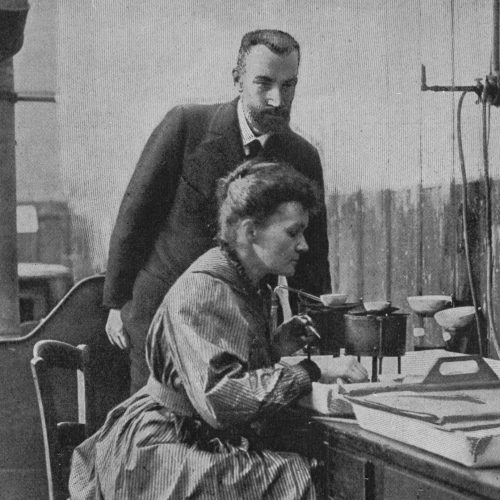

Pioneer of Radioactivity & Two-Time Prize Winner
1867 - 1934

Marie Skłodowska Curie was a Polish-French Physicist and chemist who conducted pioneering research on radiioactivity. She was the first woman to win a Nobel Price, the first person to w Nobel Price twice, and the only person to win a Noble Prize in two scientific fiels.
Born in Warsaw, Poland, she moved to Paris to pursue her studies at the University of Paris, where she earned her degree in physics and mathematics. Her groundbreaking work not only advanced our understanding of atomic physics and chemistry but also paved the way for future generations of women in science.
Marie Curie's dedication to science, her perseverance in the face of adversity, and her unwavering commitment to knowledge make her one of the most admirable figures in scientific history.
Her insatiable desire to understand the natural world led to groundbreaking discoveries in radioactivity, opening new frontiersin physics and chemistry.
Despite facing gender discrimination and financial hardships, she never gave up on her scientific pursuits and continued her research with unwavering determination.
As the first woman to win a Nobel Price and the only person to win Nobel Prices in two different scientific fields, she broke barriers abd inspired countless others.
During world War I, she developed mobile X-ray units to help wounded soliders, demonstrating her commitment to using science for the betterment of humanity.
Along with her husband Pierre, Marie discovered two new radioactive elements, naming one after her homeland Poland.
Shared with Pierre Curie and Henri Becquerel for their work on radioactivity, making her the first woman to win a Nobel Prize.
Won for the discovery of radium and polonium and the isolation of pure radium, making her the only person to win Nobel Prizes in two different sciences.
Developed mobile radiography units during WWI, personally driving them to the front lines to help save soldiers' lives.
Established research institutes in Paris and Warsaw that continue to be leading cancer research centers today.
Nothing in life is to be feared, it is only to be understood. Now is the time to understand more, sot that we may fear less.